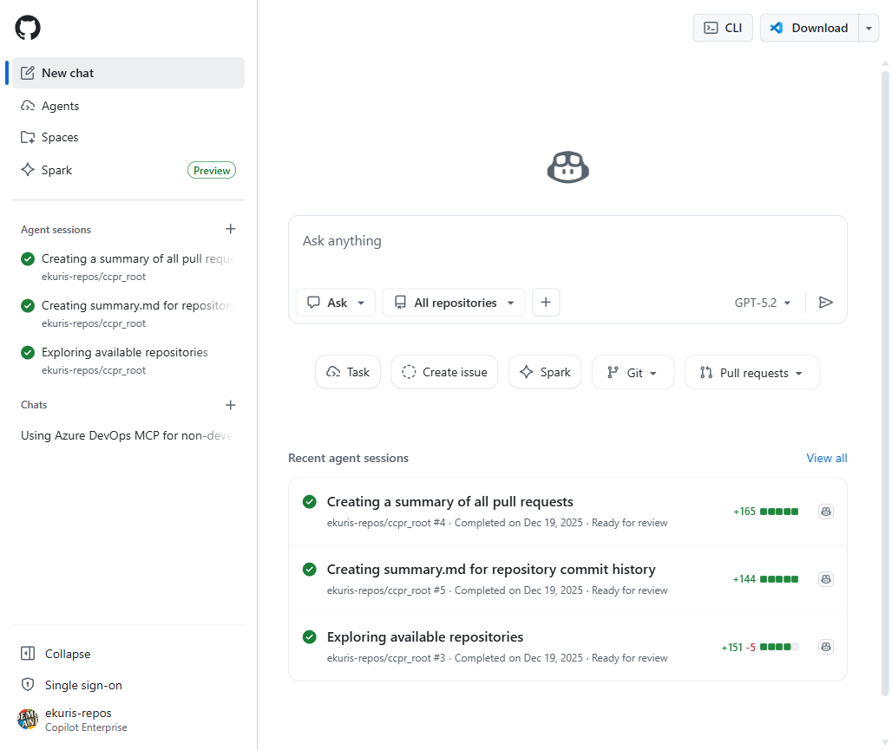
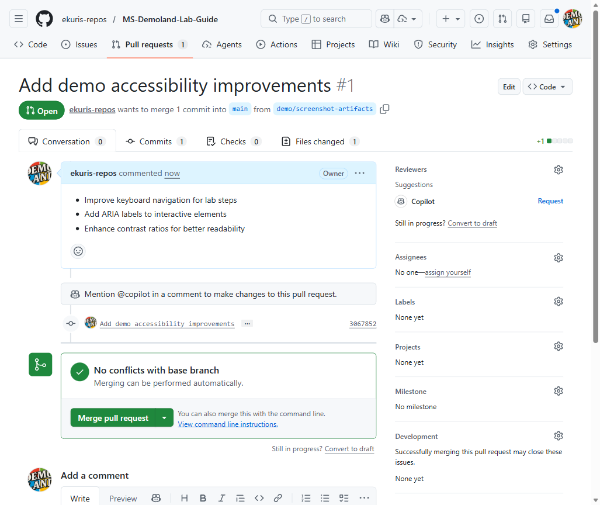
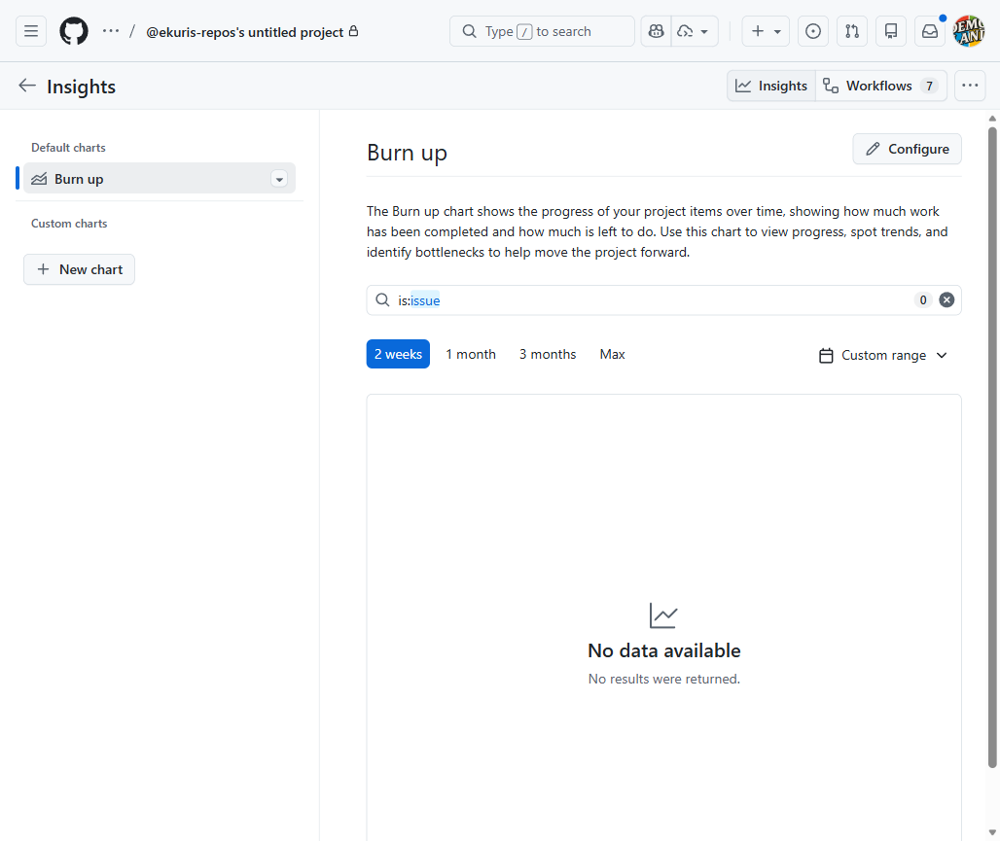

Unified Tooling - Copilot and the Thing
Consolidate scattered repositories, trackers, and knowledge bases into one workflow with Copilot as your central assistant
Overview
What We'll Cover
Today's Agenda
- The Scattered Tools Problem - why multi-platform sprawl slows teams down
- GitHub as a Unified Platform - Issues, Projects, Discussions, Wikis, and Actions
- Copilot Ties It Together - ask questions across repos, issues, and docs
- Copilot on GitHub.com - chat, PR summaries, and issue summaries on the web
- Copilot in VS Code for Non-Developers - exploring repos without writing code
- Practical Workflows - real questions you can ask Copilot today
- Integrations - connecting external tools like Jira, Azure DevOps, and Slack
- Getting Started - what to consolidate first and migration strategies
Part 1
The Scattered Tools Problem
Too Many Tools, Too Many Tabs
- Source code lives in one platform; issue tracking lives in another
- Documentation is split across wikis, SharePoint, Confluence, and Google Docs
- Project boards sit in Jira, Trello, or an internal spreadsheet
- Team communication happens in Slack, Teams, and email simultaneously
- No single place to ask: "What is the current status of Project X?"
The Real Cost of Tool Sprawl
Time Lost
Context switching between platforms eats up hours every week. Finding the right document or issue in the wrong system creates friction that compounds over time.
Knowledge Gaps
When information lives in silos, decisions get made with incomplete data. New team members take weeks to figure out which tool holds which answers.
graph TD Work[Project Work] --> Tool1[Planner Tool] Work --> Tool2[Code Tool] Work --> Tool3[Docs Tool] Work --> Tool4[Chat Tool] Tool1 -.silo.-> Tool2 Tool2 -.silo.-> Tool3 Tool3 -.silo.-> Tool4
Part 2
GitHub as a Unified Platform
More Than Source Code
- Issues - track bugs, feature requests, and tasks with labels, milestones, and assignees
- Projects - Kanban boards, tables, and roadmaps with custom fields and automation
- Discussions - threaded Q&A, announcements, and brainstorming spaces for each repo
- Wikis - built-in documentation that lives alongside the code it describes
- Actions - automated workflows for CI/CD, notifications, and scheduled tasks
- Pull Requests - code review, approval gates, and change tracking in one view

Why Colocation Matters
Before: Scattered
- Issue in Jira references a PR in GitHub
- Design doc in Confluence links to a spreadsheet
- Slack thread has context that never gets recorded
After: Unified
- Issue, PR, and discussion live in the same repo
- Wiki documents the feature beside the code
- Copilot can search across all of it at once
Part 3
Copilot Ties It Together
Your AI-Powered Guide to Everything
- Ask Copilot questions in natural language instead of manually searching
- Copilot can reference your repositories, issues, pull requests, and discussions
- Get instant summaries instead of reading through long threads
- No need to remember which repo, issue number, or wiki page holds the answer
- Works for everyone on the team, not just developers
How Copilot Finds Context
- Repository knowledge - Copilot retrieves relevant content from your repositories, README files, and documentation
- Issue and PR threads - it reads through comments and review conversations
- Organization scope - Copilot can search across all repositories in your org that your permissions allow
Part 4
Copilot on GitHub.com
Copilot Chat on GitHub.com
- Access Copilot Chat from the chat icon in the top navigation bar
- Ask general questions: "How do I set up branch protection rules?"
- Ask about your org: "Which repos were updated this week?"
- Scope your questions to a specific repository for more focused answers
- Conversations are saved so you can pick up where you left off

PR Summaries & Issue Summaries
Pull Request Summaries
- Copilot generates a plain-language summary of what changed
- Ideal for stakeholders who need context without reading diffs
- Available from the PR page with one click
Issue Summaries
- Long issue threads with 30+ comments get distilled into key points
- Quickly understand the current status and any decisions made
- No need to scroll through a wall of comments

Part 5
Copilot in VS Code for Non-Developers
Exploring Repos Without Writing Code
- Clone a repo in VS Code to browse the project structure locally
- Ask Copilot: "What does this project do?" and get a plain-language overview
- Ask Copilot: "Where is the configuration for the login page?"
- Understand architecture decisions without needing to read code yourself
- Search across files, READMEs, and inline comments for the answers you need
Practical Tasks in VS Code
Read and Understand
- "Explain this file to me in simple terms"
- "What environment variables does this app need?"
- "List all the external APIs this project calls"
Edit Docs and Config
- Update README files with better descriptions
- Edit YAML configuration with Copilot's help
- Write release notes based on recent changes
Part 6
Practical Workflows
Workflow: "What's the Status of Project X?"
- Before: Check Jira for open tickets, check GitHub for open PRs, ask the tech lead in Slack, compile a summary manually
- After: Ask Copilot: "Summarize the current status of the checkout-redesign project"
- Copilot reviews open issues, recent PRs, and milestones to generate a summary
- Share the summary directly with stakeholders; no spreadsheet assembly required

Workflow: "Summarize This PR for a Stakeholder"
- Open a pull request on GitHub.com and click the Copilot summary button
- Get a non-technical summary: "This change adds password reset functionality and updates the login page layout"
- Copy the summary into an email, Teams message, or status report
- No need to understand the code diff yourself
Workflow: Onboarding a New Team Member
- New team member asks Copilot: "What repos does the payments team maintain?"
- Follow up: "What is the architecture of the payments service?"
- Follow up: "Who are the main contributors to this repo?"
- The new hire builds context in minutes instead of days of meetings
- Institutional knowledge is captured in the repos, not trapped in people's heads
Part 7
Connecting External Tools
Integrations: Meeting Teams Where They Are
- Jira & Azure DevOps - link and cross-reference work items across GitHub and Jira/Azure DevOps. Full bidirectional issue sync requires third-party tools
- Slack & Teams - receive GitHub notifications, create issues, and trigger workflows from chat
- MCP (Model Context Protocol) - let Copilot query external data sources directly
- Copilot Extensions - add domain-specific capabilities to Copilot Chat
- Start with GitHub as the hub; connect external tools as spokes
Part 8
Getting Started
What to Consolidate First
- Step 1: Move issue tracking into GitHub Issues or Projects for one pilot team
- Step 2: Migrate documentation into repo wikis or markdown files in the repo
- Step 3: Enable Copilot for the pilot team and encourage natural-language questions
- Step 4: Set up integrations for tools you cannot migrate yet (Jira, Slack, etc.)
- Step 5: Measure the impact: reduced context switching, faster onboarding, better status visibility
Migration Tips
Do
- Start with one team, not the whole org
- Migrate issues gradually; use integrations as a bridge
- Write good README files; they are a high-value source Copilot frequently draws on
- Label and organize issues consistently
Avoid
- Trying to migrate everything at once
- Forcing teams to abandon tools before replacements are ready
- Treating migration as a one-time event instead of a gradual shift
- Neglecting documentation quality; Copilot is only as good as your content
Summary
Wrap-Up & Next Steps
Key Takeaways
- Scattered tools cost time and create knowledge gaps; consolidation solves both
- GitHub is more than source code: Issues, Projects, Discussions, Wikis, and Actions form a complete platform
- Copilot acts as your AI-powered guide: ask questions across all your GitHub content
- PR summaries and issue summaries eliminate manual status reporting
- VS Code with Copilot is useful even if you never write code
- Integrations bridge the gap for tools you cannot migrate immediately
- Start small, measure the impact, and expand from there
Thank You
Questions? Reach out on Teams or open an issue.